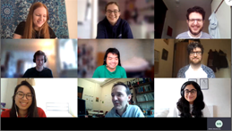
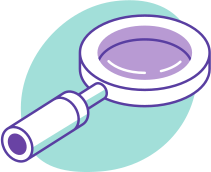
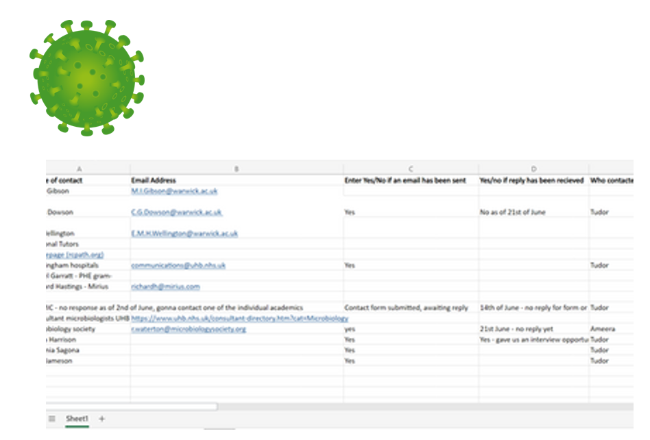
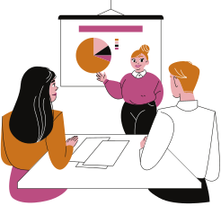

Initial Brainstorming and Planning - Mid February
Divided into 3 groups looking at different potential areas following a Microsoft teams meeting where we all meteach other (virtually). The group looked into past IGEM projects, use of casein and production of alternative dairy products, biosensors and also microplastics.
Sharing Ideas and Research - Early March
In our second teams meeting we discussed the research we foundand also potential problems for example legal and ethical issues relating to a food product. With the helpful advice from previous IGEM members we looked into different tracks and what particularly interests us and explored together past work. From here we found an interest in environmental field and also looking a diagnostics. Useof GFP was mentioned but also plastic biodegradability too.
Catch Up and Progress Meeting - Mid March
In this meeting we were joined with Dr Christophe Corre and research fellow Emzo De Los Santos. We discussed FGP in plants as a detection tool for pathogens as a potential project idea. We discussed also the use of social media in communication and outreach as well as potential collaborations with societies. With the current situation with pandemic we recognised the importance of using social media platforms to helps build relationships and connections which could aid in future collaborations .
Detection of CRE and Biosensors
After further research from break out groups we came across the concern of CRE infections in hospitals by PHE. We decided to think about how we canmake a rapid detection product which can be used by cleaning staff without training and will eliminate the need for a lab. The second factor is highly important as current detection methods for CRE require a lab and will take 4-5 days for sample to be processed which can lead to large outbreaks in hospitals due to delay in results. The use of fluorescence will be key in staff seeing the presence of CRE .
Developing Our Idea On How To Detect CRE
We started to plan who to contact with the advice of PHD students and our advisors and as this biosensor is aimed to be used in hospitals and clinical environments due these environments having high reservoirs of CRE. We contact microbiologists and specialists within the University of Warwick to allow us to gain a better understanding of how to tackle this problem.
Meeting with Freya Harrison
Advised too look at broad spectrum detection and looking a specific phages or peptidoglycan layer tagging. we gained some great contacts as well as highlighting the importance of looking at what is the infectious dose , how it spreads and issues surrounding biofilms.